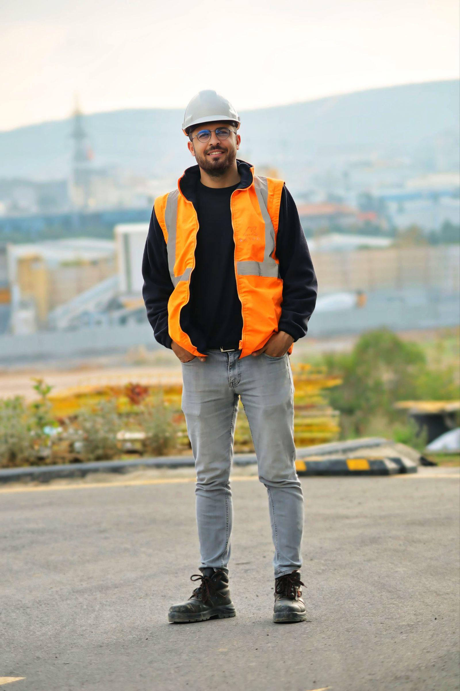

Om Karaten
Jonas Permbeck och Robin Klich startade Karaten i Malmö sommaren 2006 med fem anställda. Efter två år var företaget drygt 30 medarbetare med eget kontor i Staffanstorp, och Carsten Nilsson – då Peabs marknadschef för byggservice – anslöt.
Vi bygger en bättre omvärld
Jonas Permbeck och Robin Klich startade Karaten i Malmö sommaren 2006 med fem anställda. Efter två år var företaget drygt 30 medarbetare med eget kontor i Staffanstorp, och Carsten Nilsson – då Peabs marknadschef för byggservice – anslöt.
Idag har koncernen drygt 500 medarbetare. Vi har plockat bort alla chefstitlar och ersatt dem med ledartitlar, och vår värdegrund heter KAMRAT.

Ett nytänkande byggföretag sedan 2006
Jonas Permbeck och Robin Klich startade Karaten i Malmö sommaren 2006 med fem anställda. Efter två år var företaget drygt 30 medarbetare med eget kontor i Staffanstorp, och Carsten Nilsson – då Peabs marknadschef för byggservice – anslöt.


Kontakta oss
- Huvudkontor
- Flisvägen 22-9
245 34 Staffanstorp - Telefon
- 010-164 62 20